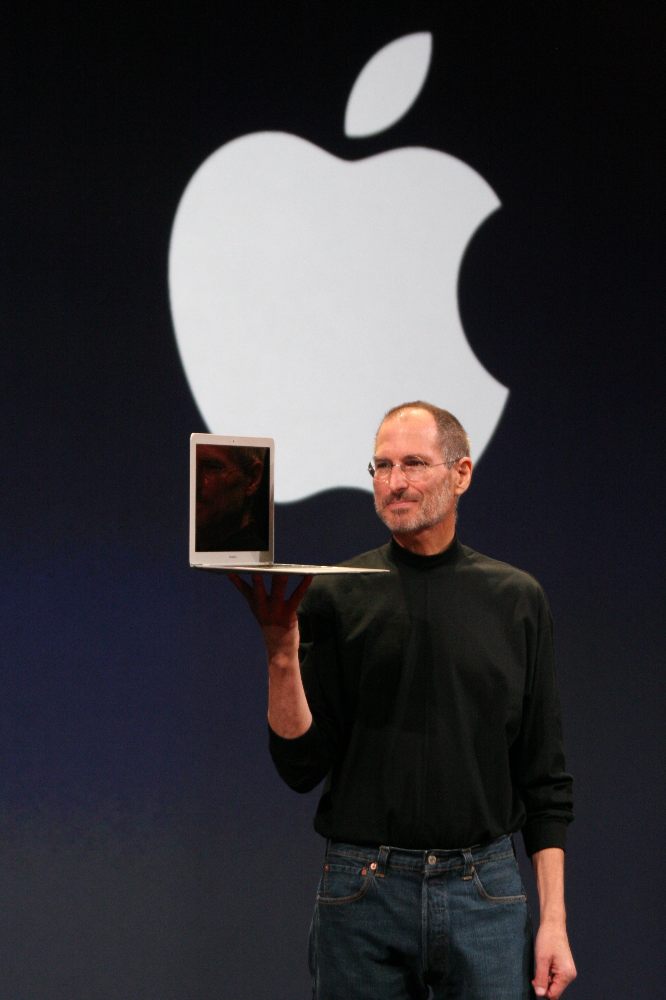

ကမ္ဘာကြီးကို ပြောင်းလဲခဲ့သည့် ပန်းသီးပိုင်ရှင် - စတိဗ်ဂျော့ဘ် (Steve Jobs)

ကွန်ပျူတာဆိုသည်မှာ အခန်းတစ်ခန်းစာမျှ ကြီးမားပြီး သာမန်လူများ အသုံးပြုရန် ခက်ခဲသောခေတ်တွင်၊ စတိဗ်ဂျော့ဘ်သည် သူ၏ သူငယ်ချင်းဖြစ်သူ စတိဗ်ဝိုဇနစ် (Steve Wozniak) နှင့်အတူ မိဘများ၏ ကားဂိုဒေါင်ငယ်လေးထဲ၌ Apple ကို စတင်တည်ထောင်ခဲ့သည်။ လူတိုင်း၏ စားပွဲခုံပေါ်တွင် အလွယ်တကူ အသုံးပြုနိုင်မည့် ကိုယ်ပိုင်ကွန်ပျူတာ (Personal Computer) များ ရှိလာစေရမည်ဟူသော သူ၏ ရည်မှန်းချက်သည် နည်းပညာလောကကို စတင်ကိုင်လှုပ်ခဲ့သည်။
၁၉၈၅ ခုနှစ်တွင် အသက် ၃၀ အရွယ် စတိဗ်ဂျော့ဘ်သည် သူကိုယ်တိုင် တည်ထောင်ခဲ့သော Apple ကုမ္ပဏီမှ အထုတ်ခံခဲ့ရသည်။ သို့သော် သူသည် အရှုံးမပေးခဲ့ဘဲ NeXT အမည်ရှိ ကွန်ပျူတာကုမ္ပဏီအသစ်နှင့် 3D Animation ရုပ်ရှင်များဖန်တီးမည့် Pixar ကို ထပ်မံတည်ထောင်ခဲ့သည်။ Pixar မှ ထုတ်လုပ်ခဲ့သော 'Toy Story' ရုပ်ရှင်သည် ကမ္ဘာတစ်ဝှမ်း အောင်မြင်မှုရရှိခဲ့ပြီး သူ၏ တီထွင်ဖန်တီးနိုင်စွမ်းကို ထပ်မံသက်သေပြနိုင်ခဲ့သည်။
၁၉၉၇ ခုနှစ်တွင် ဒေဝါလီခံရလုနီးပါးဖြစ်နေသော Apple သို့ သူပြန်လည်ရောက်ရှိလာချိန်တွင်တော့ သမိုင်းတစ်ခေတ်ကို ပြန်လည်ရေးထိုးနိုင်ခဲ့သည်။ သူသည် ရှုပ်ထွေးနေသော ထုတ်ကုန်များကို ရပ်တန့်ပစ်ကာ၊ ရိုးရှင်းလှပသော iMac၊ သီချင်းထောင်ပေါင်းများစွာကို အိတ်ကပ်ထဲထည့်သယ်နိုင်မည့် iPod နှင့် ကမ္ဘာ့ဖုန်းသုံးစွဲမှုပုံစံကို အပြီးတိုင်ပြောင်းလဲပစ်ခဲ့သည့် iPhone တို့ကို မိတ်ဆက်ပေးခဲ့သည်။ နည်းပညာနှင့် အနုပညာကို ပေါင်းစပ်ပေးခဲ့သူအဖြစ် သူ့ကို ကမ္ဘာက အသိအမှတ်ပြုခဲ့ရသည်။
(Your time is limited, so don't waste it living someone else's life.)"